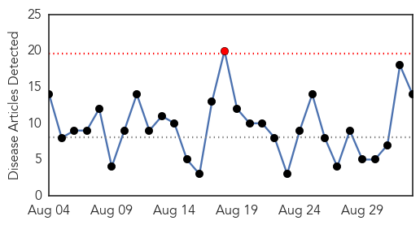
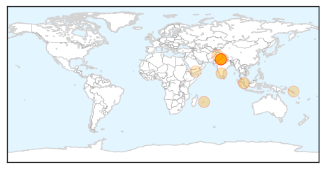
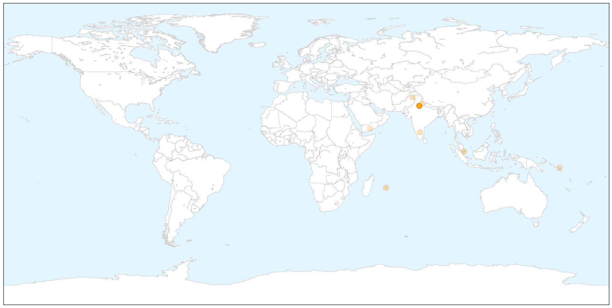
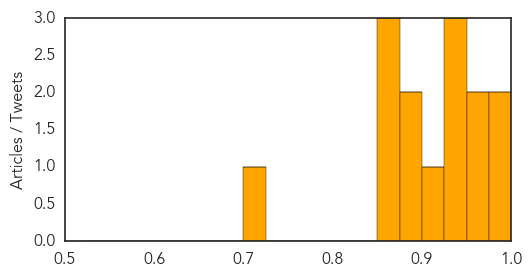
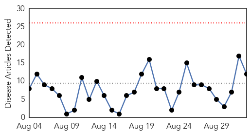
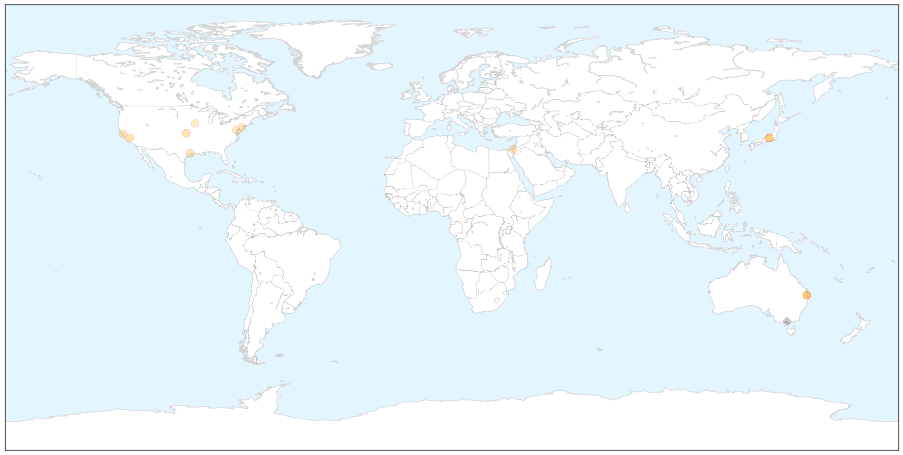

Dengue Fever
30-Day Web Trend
1 alerts, 0 warnings

30-Day Twitter Trend
3 alerts, 0 warnings

Article Locations

X

Article Confidences
Top Articles:
- 0.999
- Dengue fever: How a mosquito infected millions, and not with malaria
- 0.981
- 26 Cases of Dengue Fever Reported in Mauritius – The Fight Continues
- 0.955
- Dengue scare keeps Delhi government on its toes : Mail Today, News
- 0.950
- Government to identify prevalent dengue virus subtype within a week
- 0.947
- Govt to identify prevalent dengue virus subtype within a week
- 0.929
- Hospitals In Delhi To Treat Dengue Patients First, Postpone Non-Critical Surgeries
- 0.927
- 745 dengue cases confirmed in Chittoor
- 0.906
- Dengue crisis in Delhi continues to grow
- 0.892
- Geared up to tackle dengue: Health ministry
- 0.876
- Geared up to tackle dengue: Health ministry
- 0.872
- Health team visits ‘dengue-hit’ areas in Mansehra
- 0.868
- Health ministryMangalorean.com
- 0.851
- Samoa enhances health surveillance
- 0.711
- Rising civilian casualties in Taiz worry UN
Top Tweets:
-
No tweets found for Sep 02, 2015
Influenza
30-Day Web Trend
0 alerts, 0 warnings

30-Day Twitter Trend
5 alerts, 0 warnings

Article Locations

X

Article Confidences

Top Articles:
- 0.980
- 18,000 Cases of ‘Brisbane Flu’ Reported In Past Three Weeks
- 0.970
- Strain comeback behind Qld horror flu year
- 0.915
- Encourage Flu Vaccine Early, Often, and Broadly
- 0.898
- Illawarra flu cases higher than normal
- 0.863
- Top 10 Causes of Death in the USA–It May Surprise You!
- 0.859
- Flu study, on hold, yields new vaccine technology
- 0.850
- Flu Study, On Hold, Yields New Vaccine Technology
- 0.751
- September 1, 2015 Archives
- 0.751
- September 1, 2015 Archives
- 0.751
- September 1, 2015 Archives
- 0.681
- Preparations Underway for Fall Bird Flu Outbreak amid Ongoing Mystery
- 0.640
- Anaesthesia may help us fight flu
Top Tweets:
- 0.644
- A SURGE in influenza B cases has prompted warnings by SA Health to urge parents to ensure their children get their annual flu vaccination.